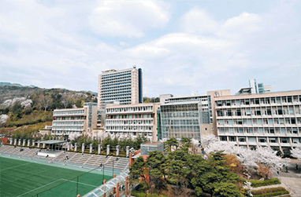
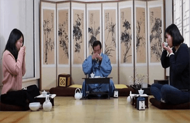
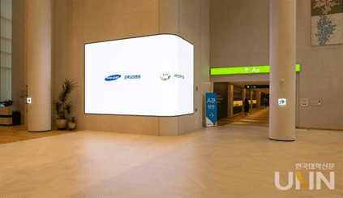
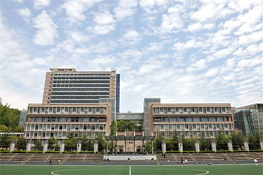
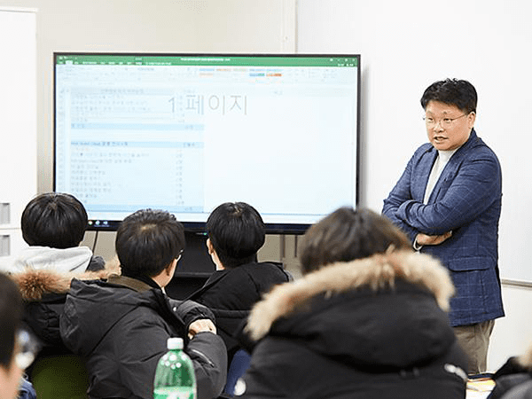
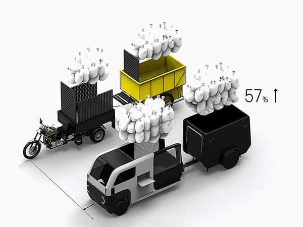
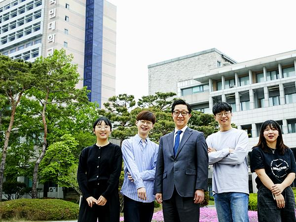
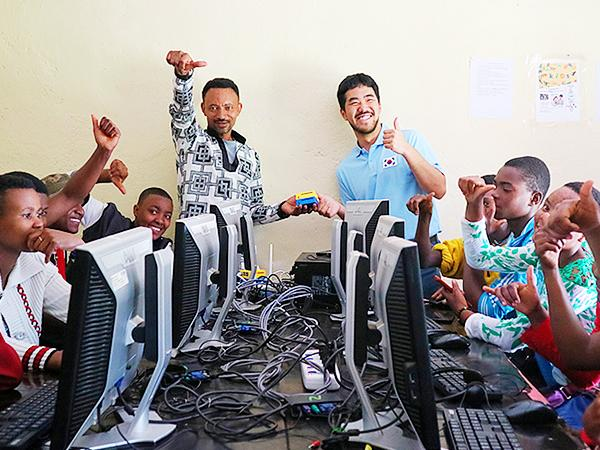

최근 공지사항 전체 보도자료 학업정보 고구려인 고구려대 운영 AI 양재 허브, 신용보증기금·우리은행과 AI 특화기업지원 3자 업무협약 체결 Thank you~ 교수님, 감사합니다.  유승민 IOC 위원, 고구려대에 마스크 기부  고구려대 봉사단, ‘애착인형 나눔’ 프로젝트 진행  고구려대 “스포츠산업 재창업지원사업 기관 선정”  고구려대, KMU 인공지능센터 (KMU AI Center) 설립 고구려대 운영 AI 양재 허브, 신용보증기금·우리은행과 AI 특화기업지원 3자 업무협약 체결 Thank you~ 교수님, 감사합니다. 유승민 IOC 위원, 고구려대에 마스크 기부 고구려대 봉사단, ‘애착인형 나눔’ 프로젝트 진행 고구려대 “스포츠산업 재창업지원사업 기관 선정” 고구려대, KMU 인공지능센터 (KMU AI Center) 설립 고구려대 운영 AI 양재 허브, 신용보증기금·우리은행과 AI 특화기업지원 3자 업무협약 체결 Thank you~ 교수님, 감사합니다. 유승민 IOC 위원, 고구려대에 마스크 기부 고구려대 봉사단, ‘애착인형 나눔’ 프로젝트 진행 고구려대 “스포츠산업 재창업지원사업 기관 선정” 고구려대, KMU 인공지능센터 (KMU AI Center) 설립 더보기 고구려대 봉사단, ‘애착인형 나눔’ 프로젝트 진행 고구려대 “스포츠산업 재창업지원사업 기관 선정” 고구려대, KMU 인공지능센터 (KMU AI Center) 설립 고구려대 운영 AI 양재 허브, 신용보증기금·우리은행과 AI 특화기업지원 3자 업무협약 체결 Thank you~ 교수님, 감사합니다. 유승민 IOC 위원, 고구려대에 마스크 기부 고구려대 운영 AI 양재 허브, 신용보증기금·우리은행과 AI 특화기업지원 3자 업무협약 체결 Thank you~ 교수님, 감사합니다. 유승민 IOC 위원, 고구려대에 마스크 기부 고구려대 봉사단, ‘애착인형 나눔’ 프로젝트 진행 고구려대 “스포츠산업 재창업지원사업 기관 선정” 고구려대, KMU 인공지능센터 (KMU AI Center) 설립 고구려대 운영 AI 양재 허브, 신용보증기금·우리은행과 AI 특화기업지원 3자 업무협약 체결 Thank you~ 교수님, 감사합니다. 유승민 IOC 위원, 고구려대에 마스크 기부 고구려대 봉사단, ‘애착인형 나눔’ 프로젝트 진행 고구려대 “스포츠산업 재창업지원사업 기관 선정” 고구려대, KMU 인공지능센터 (KMU AI Center) 설립 더보기 고구려대 운영 AI 양재 허브, 신용보증기금·우리은행과 AI 특화기업지원 3자 업무협약 체결 Thank you~ 교수님, 감사합니다. 유승민 IOC 위원, 고구려대에 마스크 기부 고구려대 봉사단, ‘애착인형 나눔’ 프로젝트 진행 고구려대 “스포츠산업 재창업지원사업 기관 선정” 고구려대, KMU 인공지능센터 (KMU AI Center) 설립 고구려대 운영 AI 양재 허브, 신용보증기금·우리은행과 AI 특화기업지원 3자 업무협약 체결 Thank you~ 교수님, 감사합니다. 유승민 IOC 위원, 고구려대에 마스크 기부 고구려대 봉사단, ‘애착인형 나눔’ 프로젝트 진행 고구려대 “스포츠산업 재창업지원사업 기관 선정” 고구려대, KMU 인공지능센터 (KMU AI Center) 설립 고구려대 운영 AI 양재 허브, 신용보증기금·우리은행과 AI 특화기업지원 3자 업무협약 체결 Thank you~ 교수님, 감사합니다. 유승민 IOC 위원, 고구려대에 마스크 기부 고구려대 봉사단, ‘애착인형 나눔’ 프로젝트 진행 고구려대 “스포츠산업 재창업지원사업 기관 선정” 고구려대, KMU 인공지능센터 (KMU AI Center) 설립 더보기 고구려대 운영 AI 양재 허브, 신용보증기금·우리은행과 AI 특화기업지원 3자 업무협약 체결 Thank you~ 교수님, 감사합니다. 유승민 IOC 위원, 고구려대에 마스크 기부 고구려대 봉사단, ‘애착인형 나눔’ 프로젝트 진행 고구려대 “스포츠산업 재창업지원사업 기관 선정” 고구려대, KMU 인공지능센터 (KMU AI Center) 설립 고구려대 운영 AI 양재 허브, 신용보증기금·우리은행과 AI 특화기업지원 3자 업무협약 체결 Thank you~ 교수님, 감사합니다. 유승민 IOC 위원, 고구려대에 마스크 기부 고구려대 봉사단, ‘애착인형 나눔’ 프로젝트 진행 고구려대 “스포츠산업 재창업지원사업 기관 선정” 고구려대, KMU 인공지능센터 (KMU AI Center) 설립 고구려대 운영 AI 양재 허브, 신용보증기금·우리은행과 AI 특화기업지원 3자 업무협약 체결 Thank you~ 교수님, 감사합니다. 유승민 IOC 위원, 고구려대에 마스크 기부 고구려대 봉사단, ‘애착인형 나눔’ 프로젝트 진행 고구려대 “스포츠산업 재창업지원사업 기관 선정” 고구려대, KMU 인공지능센터 (KMU AI Center) 설립 더보기
고구려대 교육 프로그램 고구려가 하면 다릅니다. 팀팀 클래스 알파프로젝트 HOT TEAM CLASS 유레카 프로젝트  팀팀 클래스 1 Feel the GAP, Fill the GAP 공공정책과 유니버설 디자인을 통한 GAP 없애기 팀팀 클래스 2 Feel the GAP, Fill the GAP 공공정책과 유니버설 디자인을 통한 GAP 없애기 팀팀 클래스 3 Feel the GAP, Fill the GAP 공공정책과 유니버설 디자인을 통한 GAP 없애기 팀팀 클래스 4 Feel the GAP, Fill the GAP 공공정책과 유니버설 디자인을 통한 GAP 없애기 팀팀 클래스 5 Feel the GAP, Fill the GAP 공공정책과 유니버설 디자인을 통한 GAP 없애기  팀팀 클래스 1 Feel the GAP, Fill the GAP 공공정책과 유니버설 디자인을 통한 GAP 없애기 팀팀 클래스 2 Feel the GAP, Fill the GAP 공공정책과 유니버설 디자인을 통한 GAP 없애기 팀팀 클래스 3 Feel the GAP, Fill the GAP 공공정책과 유니버설 디자인을 통한 GAP 없애기 팀팀 클래스 4 Feel the GAP, Fill the GAP 공공정책과 유니버설 디자인을 통한 GAP 없애기 팀팀 클래스 5 Feel the GAP, Fill the GAP 공공정책과 유니버설 디자인을 통한 GAP 없애기 팀팀 클래스 1 Feel the GAP, Fill the GAP 공공정책과 유니버설 디자인을 통한 GAP 없애기 팀팀 클래스 1 Feel the GAP, Fill the GAP 공공정책과 유니버설 디자인을 통한 GAP 없애기  팀팀 클래스 1 Feel the GAP, Fill the GAP 공공정책과 유니버설 디자인을 통한 GAP 없애기 팀팀 클래스 2 Feel the GAP, Fill the GAP 공공정책과 유니버설 디자인을 통한 GAP 없애기 팀팀 클래스 3 Feel the GAP, Fill the GAP 공공정책과 유니버설 디자인을 통한 GAP 없애기 팀팀 클래스 4 Feel the GAP, Fill the GAP 공공정책과 유니버설 디자인을 통한 GAP 없애기 팀팀 클래스 5 Feel the GAP, Fill the GAP 공공정책과 유니버설 디자인을 통한 GAP 없애기  팀팀 클래스 1 Feel the GAP, Fill the GAP 공공정책과 유니버설 디자인을 통한 GAP 없애기 팀팀 클래스 2 Feel the GAP, Fill the GAP 공공정책과 유니버설 디자인을 통한 GAP 없애기 팀팀 클래스 3 Feel the GAP, Fill the GAP 공공정책과 유니버설 디자인을 통한 GAP 없애기 팀팀 클래스 4 Feel the GAP, Fill the GAP 공공정책과 유니버설 디자인을 통한 GAP 없애기 팀팀 클래스 5 Feel the GAP, Fill the GAP 공공정책과 유니버설 디자인을 통한 GAP 없애기
교내행사 미중 신냉전의 전개와 한국의 선택 장소 : 학술회의장 일시 : 21.05.07 지금 당장! 레디 큐! 장소 : 학술회의장 일시 : 21.06.02 화요 클래식! My dear Liszt 장소 : 학술회의장 일시 : 21.06.12 인공지능(AI) 장소 : 학술회의장 일시 : 21.06.17